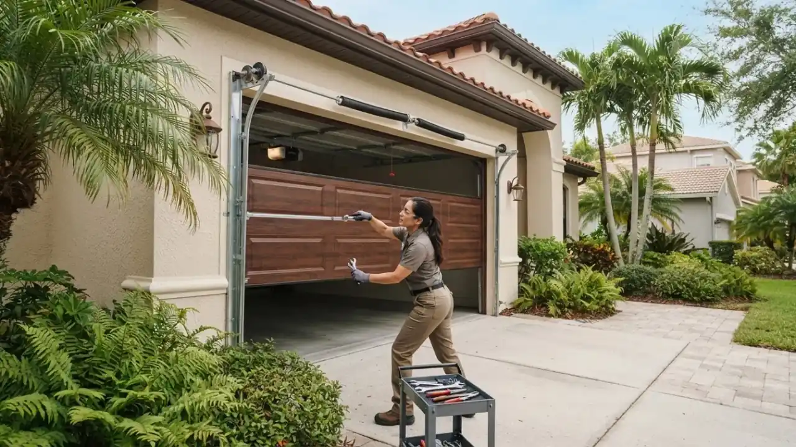

Same-day remote fix for LiftMaster, Chamberlain, Genie and more
Garage Door Remote Repair in Tampa That Gets You Moving
A remote that stops working leaves you on the wall button, or climbing out of the car in the rain to open the door by hand. Remote repair in Tampa restores full wireless control, usually in under an hour. Every major brand is covered, the real cause is diagnosed rather than guessed at, and a replacement remote is programmed on the spot so you are never locked out of your own garage.
Live dispatcherUpfront optionsBacked workmanship
The basics
What Is Garage Door Remote Repair?
Remote repair is the fix for the handheld transmitter that tells the opener to raise or lower the door. Remotes fail when the battery dies, the buttons wear out, the programming is lost, or the opener receiver stops recognising the signal. It is needed when the remote only works at close range, works some of the time, or stops entirely while the wall button still works. The repair usually means a fresh battery, reprogramming, and a signal test, and a worn-out remote is replaced and paired to the opener.
What's included
What Our Remote Repair Service Includes
Every remote repair visit covers a full diagnosis of the remote, receiver, and opener, plus a safety check on the door itself. Here is what the standard price includes, and what is quoted separately when it comes up.
Full Remote Diagnosis
Battery voltage, signal output, and receiver response are tested with an opener remote tester. The answer is clear on what failed and why, not a guess, and the diagnostic is included in the service call price.
Remote Programming
A remote that only lost its code is re-synced to the opener with no extra hardware cost. Rolling codes, fixed codes, and universal remotes are all programmed, and the signal is tested from three distances before the job is called done.
Battery Replacement
Most remotes run on a 3-volt CR2032 or A23 battery. Both are stocked on the truck and swapped as part of the visit. An unusual battery type is named exactly, so one can be picked up anywhere.
Receiver Board Check
After a dead battery, a failing receiver board is the next most common cause of remote failure. The board is tested, and a repair or replacement is quoted before any work is done. No surprise charges.
Safety Sensor Alignment
Blinking photo eye sensors will stop the door from closing and can make a remote look broken. They are aligned with a sensor alignment tool, and the safety reverse is confirmed to UL 325 safety standard.
Door and Opener Inspection
While on site, springs, cables, rollers, and tracks get a free visual check for obvious wear. It often catches a snapped cable or a worn roller before it strands the car.
Service overview
What Garage Door Remote Repair in Tampa Involves
What remote repair does in Tampa is restore the wireless link between the handheld transmitter and the opener's receiver board. A dead button press usually traces to one of four faults: a dead or corroded battery, a remote that lost its rolling-code sync, a failed receiver logic board, or interference from LED lighting or a neighbour's opener on the same frequency. An opener remote tester checks each link in turn, so parts are not swapped on a guess.
Tampa homeowners call most often after a remote quits mid-week, during the summer storm season when power flickers reset the opener's memory, or when a newly installed smart opener refuses to pair with an older clicker. Homes in South Tampa and Westchase with metal garage doors sometimes fight signal range, and that is solved with an external antenna or a repeater. Stocked on the truck are the common LiftMaster, Chamberlain, Genie, and Craftsman remotes, so the fix can happen today.

How we workWe verify the cause, compare realistic options, and confirm the repair before we leave.
The service timeline
How Our Remote Repair Process Works
Remote faults hide behind each other, so the visit tests the remote, the receiver, and the door in turn. Five steps carry it from the call to the handover.
Phone Diagnosis
The call brings three quick questions: does the wall button still work, does the keypad work, and did the remote die suddenly or gradually? Those answers point at the remote, the receiver, or the opener itself. A range is quoted before a truck rolls, usually within 15 minutes.
On-Site Testing
The tech arrives with an opener remote tester and checks battery voltage, signal output, and receiver response. The wall mount keypad and photo eye sensors are tested too, since a blinking safety sensor can mimic a remote failure. About 10 minutes.
Repair or Reprogram
A dead remote is swapped for a matching or universal unit and programmed to the opener. A receiver board fault is repaired or replaced. Most jobs wrap in 30 to 60 minutes, and the signal is tested from three distances before the job is called done.
Full System Check
While on site, the torsion springs, cables, and rollers are checked for obvious wear. It costs nothing extra and often catches a snapped cable or a broken torsion spring before it strands the car. What is found is shown to you, with no pressure.
Walkthrough and Warranty
The working remote is handed over, with a demo of how to change the battery and re-sync it if ever needed, and the repair is backed by a written warranty. A text receipt and a direct number come with it for any follow-up questions.
Tools & methods
Tools and Methods We Use
A remote fault is found with meters and testers, not guesswork. This is the kit that turns it into a five-minute diagnosis.
Garage Door Opener Remote Tester
The tester reads the signal coming out of the remote and shows whether the transmitter or the receiver is at fault. A guessing game becomes a five-minute diagnosis.
Garage Door Sensor Alignment Tool
Photo eye sensors are aligned so the safety reverse works correctly. A blinking sensor can mimic a remote failure, so this is checked on every visit.
Garage Door Winding Bars
Used to de-tension torsion springs when a broken spring found during a remote visit needs a safe inspection or replacement.
Garage Door Track Bender
Small track bends are straightened so the door stops binding and the opener stops straining. A binding door often shows up first as a weak remote.
Garage Door Torque Wrench
Hinge and bracket bolts are set to spec so panels stay aligned and the door runs smoothly, keeping opener load and remote response consistent.
Digital Multimeter
Receiver board voltage and battery output are tested. It shows whether a board is failing or a remote battery is simply low.
Use cases
When Tampa Homeowners Call Us for Remote Repair
Remote calls in Tampa follow a few familiar patterns. These are two recent ones, and how each was handled.

Receiver Board Swap in New Tampa
A family in New Tampa had a LiftMaster opener where only one of four remotes worked. The opener was 11 years old and the receiver board was failing intermittently, which made the problem hard to pin down. The receiver board was replaced and all four remotes programmed, including a new universal unit for a discontinued model.
Range Fix for a Metal Door
A South Tampa homeowner with a steel garage door could only open it from inside the garage. The remote worked, but range was under 10 feet, which made it useless from the driveway. The opener's antenna was extended and the remote battery replaced.
Problems we solve
Remote Problems We Fix in Tampa Every Week
Most remote issues fall into a handful of categories. Here are the ones seen most in Tampa and how they are handled.
Remote works only up close
Signal strength is tested from multiple distances, the battery replaced when needed, and interference sources checked. When the opener has an external antenna connection, it is extended. Most range problems are fixed in one visit for under $150.
Remote stopped after a power outage
The remote is re-paired to the receiver board, which takes about 10 minutes. When the board lost more than the code, it is tested and repaired or replaced as needed. This is the remote fix Tampa homeowners need most.
One remote works, another doesn't
The failing remote is tested, replaced when dead, and old codes are cleared from the receiver when memory is full. Every remote leaves working, including the one in a spouse's car.
Keypad and remote both quit
The board is diagnosed, a repair or replacement quoted, and wireless control is back the same day in most cases. When the opener is old and parts are discontinued, an honest replacement quote is given instead.
Pricing process
What Remote Repair Costs in Tampa
$85 - $320 depending on remote type and board condition
Remote type
Standard LiftMaster or Chamberlain remotes run $35 to $60, and universal remotes that work across brands cost $45 to $80. A discontinued or vintage remote may need to be ordered, adding a day or two.
Receiver board condition
A failing board adds $120 to $220 to the bill for repair or replacement. The board is tested first, so a replacement is never paid for when it is not needed.
Number of remotes
One remote's programming comes with the service call. Each extra remote is $15 to $25, and clearing old codes from the receiver costs nothing extra.
Cost factors at a glance
| Cost factor | What affects the price |
|---|---|
| Typical range on this page | $85 - $320 depending on remote type and board condition |
| Remote type | Standard LiftMaster or Chamberlain remotes run $35 to $60, and universal remotes that work across brands cost $45 to $80. |
| Receiver board condition | A failing board adds $120 to $220 to the bill for repair or replacement. |
| Number of remotes | One remote's programming comes with the service call. |
Ranges are the ones stated on this page; you get a written estimate before work starts.
Customer reviews
What Tampa Customers Say
★★★★★
“My LiftMaster remote quit after a storm knocked the power out. I called at 9 a.m. and a tech was here by 1. He re-synced the remote to the opener, replaced the battery and tested it from the street. Cost me $95 and took 20 minutes. Way better than the last company that wanted to sell me a whole new opener.”
★★★★★
“We have a three-car garage and two of the three remotes stopped working. The tech figured out the receiver board was failing and replaced it the same visit. He also programmed a new universal remote for our older Genie. Everything works from the end of the driveway now, which it never did before.”
★★★★★
“I thought my remote was dead but it turned out to be a blinking safety sensor. The technician aligned the photo eyes, replaced the remote battery and lubricated the rollers while he was up there. Honest diagnosis, fair price, and he showed me how to re-program the remote myself next time.”
Book with confidence
What to Look for Before You Book
Before you book a remote repair, a few simple checks keep a small job from turning into a surprise bill.
- The licence number comes before any work starts, checked against the name on the quote.
- Recent reviews are worth reading for punctuality, pricing, and follow-up, not just the stars.
- A written price up front, parts and labour included, with an answer on what happens if more work appears once the door is open.
- Warranty coverage, parts and work, and its length, in writing.
- A marked vehicle at the kerb, and a technician who can say who they are and who sent them.
- A safety test and a walkthrough at the end should be in the price, so the door is seen working before they leave.
How it works
Rolling Codes and Fixed Codes: Why Your Remote Stops Working After a Power Cut
Garage door remotes use radio codes, and the type of code decides how they behave. Older openers use a fixed code: the remote sends the same code every time, and the opener accepts it. That system is simple, but it is also insecure, because the code can be copied. Modern openers use a rolling code: the remote and the opener share a sequence, and the code changes every time the button is pressed. That is far more secure, but it means the remote and the opener have to stay in step.
A power cut can knock them out of step. When the power returns, the opener may have lost the remote from its memory, or the remote may have drifted out of sequence, and the button stops working. The fix is usually a re-pairing: press the learn button on the opener motor unit, then press the remote button within 30 seconds, and the two sync again. If the remote still does not work after re-pairing, the battery is the next suspect, and then the remote itself. The technician checks in that order, because the cheapest fix is the one to try first.
- Fixed code: the same code every time, simple but insecure, and found on older openers.
- Rolling code: the code changes with every press, and it is the standard on modern openers.
- Power cut: can knock the remote and the opener out of step, so the button stops working.
- Re-pairing: press the learn button on the motor unit, then the remote button within 30 seconds.
- Battery next: if re-pairing does not work, the battery is the next thing checked.
Options
Universal Remotes: What They Can and Cannot Do
Universal remotes are a popular fix when the original remote is lost or broken, and they work well in most cases. They are programmed to mimic the code of the original, and they cover the major opener brands and the common radio frequencies. For a standard opener from the last twenty years, a universal remote is usually a quick and affordable replacement, and it can be programmed on the day.
But universal does not mean every opener. Some older openers use a frequency or a code system that no universal remote supports, and some specialist openers are not covered at all. A universal remote also cannot add features the opener does not have: it will not give a basic opener a battery backup or a smart connection. The technician checks the opener brand, model, and year before recommending a universal remote, and tests it with your door before leaving, including the range from the driveway. If no universal remote works with your opener, the honest answer is an original replacement or a new opener, and both are priced for you.
- Most cases: a universal remote covers the major brands and the common frequencies.
- Not every opener: some older or specialist openers are not supported by any universal remote.
- No new features: a universal remote cannot add a battery backup or a smart connection to a basic opener.
- Tested on site: the remote is tested with your door, including range from the driveway.
- When it will not work: an original replacement or a new opener, both priced for you.
Questions before we arrive
Frequently Asked Questions About Garage Door Remote Repair

Why is my garage door remote not working in Tampa?
The three most common causes are a dead battery, a lost rolling code after a power surge, and a failed receiver board in the opener. Tampa's summer storms trip breakers and reset opener memory more often than most homeowners realize. We test all three in one visit and tell you exactly which one failed before we charge you for anything.
How much does garage door remote repair cost in Tampa?
Most remote repairs run $85 to $220 in 2026, including the service call. A simple battery swap or re-sync sits at the low end. A new remote plus programming runs $120 to $180. If the receiver board is bad, expect $180 to $320 depending on the opener model. We quote a firm price before we start.
How do I program my garage door remote in Tampa?
On most LiftMaster and Chamberlain openers, you press the learn button on the back of the motor unit, then hold the remote button for two seconds until the opener clicks. Genie and Craftsman models vary. If your remote won't take the code, the receiver may be full or the board may be failing. We can program it for you in about 10 minutes.
Who repairs garage door remotes in Tampa?
We do, along with keypads, sensors and opener boards. We're a garage door contractor (licence number available on request) serving all of Hillsborough County, from South Tampa to New Tampa and out to Brandon and Riverview. Call us and we'll give you a same-day window for garage door remote repair near me Tampa searches that actually get answered.
Why does my garage door remote only work from close range in Tampa?
The most common cause is a weak battery, so try a fresh one first. It can also be interference from LED bulbs in the opener, a damaged antenna wire on the motor unit, or a remote that is wearing out. If a new battery does not fix it, the technician can test the signal and check the antenna, which is a quick job on most openers.
Can a lost garage door remote be a security risk in Tampa?
Yes. Anyone who finds the remote can open your garage, so a lost remote should be dealt with straight away. Most openers let you clear all remotes from the memory and then reprogram only the ones you still have, which makes the lost remote useless. The technician can clear and reprogram your opener on a visit, and it is also a good time to change the keypad code.
How many remotes can be paired to a garage door opener in Tampa?
Most modern openers accept several remotes, usually at least three or four, plus a keypad and a wall control. The exact number depends on the brand and model of your opener. If you have already reached the limit, an old remote has to be cleared before a new one can be added. The technician can check how many slots your opener has and clear any remotes you no longer use.
Why does my garage door remote work sometimes and not others?
The most common cause is a dying battery, which gives the remote enough power to work sometimes and not others. The next most likely cause is that the remote and the opener have drifted out of step, often after a power cut, and need re-pairing. It can also be interference from a nearby device, or a remote that is worn out. The technician checks the battery first, then re-pairs the remote, then tests the opener.
How do I program a garage door remote in Tampa?
The process depends on the opener brand, but it usually starts at the opener motor unit: press the learn button, then press the remote button within 30 seconds, and the two sync. The exact steps vary by brand and model, and the manual for your opener will have them. If the remote will not pair, the battery may be dead, the remote may be incompatible, or the opener memory may be full, and a technician can sort it in one visit.
Can a lost garage door remote be a security risk?
Yes. A lost remote is a key to your home, and if it is found, it can be used to open the door. If you lose a remote, clear it from the opener memory as soon as possible, which is done from the learn button on the motor unit, and then re-pair the remotes you still have. If you are unsure how to clear the memory, a technician can do it in one visit and check that no unknown remotes are still paired.
Related services
Other Garage Door Services We Handle

Garage Door Repair
When a remote issue turns out to be a door problem, the full repair is handled. Off-track doors, bent tracks, and worn hinges all change how the opener responds. The door and the remote are fixed in one visit, so two appointments are not needed.
Garage Door Spring Repair
A broken torsion spring makes the opener strain, and a straining opener can fry the receiver board that talks to the remote. When the door feels heavy or will not stay up, the springs are replaced and the remote tested before we leave.
Garage Door Opener Repair
Sometimes the remote is fine and the opener is the problem. Logic boards, gears, and photo eye sensors on LiftMaster, Chamberlain, Genie, and Craftsman units are repaired. When the opener is beyond repair, that is said straight and a replacement is quoted.Ready when you are
Get Your Garage Door Remote Repair in Tampa Today
One call gets a tech to the door, usually the same day. The remote is diagnosed, the cause fixed, and the signal tested from the driveway before we leave. Upfront pricing, written warranty, no runaround.

Talk with the local team
Request Garage Door Remote Repair
Call, text or email and a real person answers, day or night. Tell us what the door is doing and we will give you a price range on the spot plus the soonest arrival window. Most calls placed before mid-afternoon get a same-day visit anywhere in Hillsborough County.